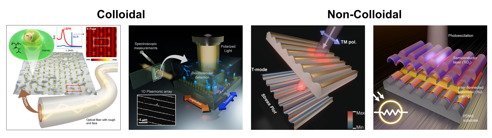

Research
Theme-based overview of scientific directions
My research focuses on plasmonic and photonic metasurfaces, hybrid light-matter interaction, chiral nanophotonics, surface-enhanced spectroscopy, and functional nano-interfaces. The common thread across these themes is the use of scalable nanofabrication and structure-guided optical design to establish functional meta-optical platforms.
Research Themes
Plasmonic Metasurfaces
My research on plasmonic metasurfaces focuses on developing functional optical interfaces using scalable bottom up nanofabrication strategies. Instead of relying on conventional top down lithography, I design structures where geometry emerges from controlled self assembly or templated material deposition. This enables large area plasmonic architectures with reduced fabrication complexity while maintaining strong control over optical response. I mostly specialize in realizing supracolloidal nanoparticle assemblies and metallic nanostructures that support collective plasmonic modes with enhanced field localization and tunable spectral characteristics.
A key research direction involves organizing gold nanoparticles into ordered or quasi ordered lattices using template assisted self assembly. These supracolloidal structures exhibit pronounced polarization dependent optical behavior and strong sensitivity to the surrounding refractive index, which we have used for biosensing applications including TNF-alpha detection. In parallel, I have developed soft template based approaches using mechanically wrinkled polymer substrates combined with oblique angle metal deposition. These methods enable large area fabrication of anisotropic plasmonic lattices that support both localized and propagating modes. Importantly, such flexible metasurfaces retain stable optical performance under mechanical deformation, making them suitable for wearable and adaptable sensing platforms.
Beyond planar systems, I have extended these approaches to unconventional substrates such as optical fiber end faces using interfacial self assembly, enabling plasmonic gratings on rough and non planar geometries. I have also explored plasmon mediated charge transport in metal semiconductor metasurfaces, where hot electron dynamics and structural design govern the photoresponse. Overall, this work establishes bottom up plasmonic metasurfaces as versatile platforms that integrate optical, mechanical, and electronic functionalities within scalable architectures for sensing and device applications.
Key directions:
- Colloidal plasmonic superlattices and nanoparticle chain assemblies
- Template assisted self assembly and soft lithographic patterning
- Wrinkle based dielectric templates with oblique metal deposition
- Flexible plasmonic sensors and deformation stable optical responses
- Plasmon mediated charge transport and photoresponse engineering

Hybrid Photonic-Plasmonic Systems
A substansive part of my research focuses on hybrid photonic plasmonic systems, where plasmonic nanostructures are coupled with dielectric photonic platforms to achieve strong and spectrally selective light matter interaction. These systems combine the field-confinement of plasmonics with the low-loss and dispersion control of photonic structures, enabling hybrid modes that cannot be realized in isolated systems. By carefully designing geometry, periodicity, and excitation conditions, these platforms allow precise control over optical field localization, spectral response, and propagation characteristics, making them highly relevant for sensing, energy conversion, and integrated nanophotonic devices.
In my work, a significant direction involves colloidal self-assembled nanoparticle lattices integrated with dielectric waveguides. Using template-assisted assembly, gold nanoparticle chains are organized on titanium dioxide layers to act as efficient couplers that guide light into underlying photonic modes. This leads to the formation of hybrid plasmon-photon polaritonic modes with tunable dispersion and optical band structure. These systems enable excitation beyond conventional polarization constraints and support strong field enhancement over large areas. In addition, plasmon mediated charge transfer processes in such hybrid architectures have been investigated, revealing enhanced photodetection and photocatalytic activity driven by hot electron generation and nanoscale coupling effects.
Complementary to colloidal approaches, I have explored lithographic and grating based hybrid architectures to realize high quality resonances with reduced losses. These include photonic crystal slabs, grating coupled plasmonic systems, and structures supporting bound states in the continuum. By tuning symmetry and structural parameters, hybrid modes with high quality factors and strong confinement can be achieved. These resonances are particularly attractive for sensing applications, where enhanced field penetration, long propagation lengths, and improved figure of merit are essential. Overall, these non colloidal approaches provide additional design flexibility and performance optimization, complementing scalable self assembly routes.
Key directions:
- Guided-mode resonance coupled plasmonic systems
- Hybrid plasmon-photon polaritons and band structure engineering
- Plasmon induced charge transfer and photocurrent generation
- Bound states in the continuum and high Q hybrid modes
- Refractive index sensing with enhanced figure of merit

Chiral Nanophotonics
My work in chiral nanophotonics originates from my doctoral research at IIT Delhi, where I developed interference lithography based approaches for the fabrication of three dimensional chiral photonic architectures. These systems were designed to control polarization dependent optical responses such as circular dichroism. By carefully controlling phase relationships in multi beam interference, it was possible to realize complex geometries in a single exposure step. This provided a scalable pathway toward structures that are otherwise difficult to fabricate using conventional methods. The focus during this phase was on understanding how geometry and symmetry breaking influence optical behavior.
More recently, in collaboration with ShanghaiTech University, we have extended these ideas toward colloidal and plasmonic systems. In this work, we demonstrated the self assembly of gold nanospheres into helical architectures using glycopeptide nanofibers as templates. The assembly process is driven by electrostatic interactions and can be tuned by adjusting the pH of the system. This allows controlled transformation of the morphology from short fragments to well defined helical structures. As a result, the chiroptical response can be modulated in a systematic and reversible manner across a broad pH range.
We further investigated how these structural variations influence electromagnetic field distribution using numerical simulations. The results showed that changes in the helical geometry directly impact field propagation and localization, which governs the observed chiral optical response. This establishes a clear link between structure and optical function. The ability to tune morphology and response in situ makes these systems promising for sensing applications, particularly in environments where external stimuli play a role.
Key directions:
- Interference lithography for chiral nanostructures
- Chiral plasmonic and photonic metasurfaces
- Circular dichroism and polarization control
- Stimuli responsive chiral assemblies

Surface Enhanced Spectroscopy
Surface enhanced Raman spectroscopy is an application-specific part of my research, particularly in the context of engineered plasmonic and hybrid metasurfaces. The key objective is to understand how nanoscale organization, collective optical modes, and structural symmetry influence electromagnetic field localization and Raman enhancement. In this direction, I have explored template assisted colloidal self assembly strategies to fabricate large area plasmonic architectures with controlled interparticle coupling. By utilizing wrinkle based templates, it is possible to guide nanoparticles into one dimensional and two dimensional arrangements that support dense hot spot distributions. In particular, zigzag wrinkle structures enable the formation of plasmonic nanoparticle chains with enhanced coupling and more isotropic optical response compared to linear assemblies. This provides a route toward uniform and efficient SERS substrates that can be tuned through external parameters such as pH when responsive coatings are incorporated.
Building on these concepts, I further investigate hybrid plasmonic photonic metasurfaces where nanoparticle assemblies are coupled to underlying dielectric modes. These systems enable spectrally selective field enhancement through the formation of hybrid plasmon photon resonances. Using angle resolved SERS, I probe the dispersion of these modes under realistic excitation conditions, including high numerical aperture and oblique incidence. This approach provides direct insight into how guided mode resonances interact with collective plasmonic modes in assembled nanoparticle lattices. A key finding is that the SERS response can be strongly enhanced when the hybrid resonance is tuned to the excitation wavelength, leading to significant intensity increases compared to off resonant conditions.
An important aspect of this work is the robustness of these metasurfaces. By systematically varying particle concentration and structural periodicity, I establish how disorder and lattice variations influence the emergence of hybrid modes. This allows identification of optimal design conditions where enhancement is maximized while maintaining tolerance to fabrication imperfections. The results provide practical design principles for scalable SERS platforms based on colloidal assembly, where both plasmonic coupling and photonic resonance engineering are combined in a single system.
Key directions:
- Wrinkle templated nanoparticle assembly and zigzag plasmonic chains
- Hybrid plasmon photonic metasurfaces for SERS
- Angle resolved spectroscopy and mode dispersion analysis
- Robust and scalable sensing platforms

Functional Nano Interfaces
The overall theme of my research is the design of functional nano interfaces where structural geometry, material composition, and optical or electromechanical response are tightly integrated. Rather than passive platforms, these systems act as active interfaces in which light matter interaction and signal generation can be engineered at the nanoscale. My work combines bottom up assembly, soft lithography, and interference based patterning to create scalable architectures that retain functionality over large areas.
One important direction focuses on metasurface integrated triboelectric nanogenerators for multifunctional sensing. By introducing nanostructured dielectric metasurfaces on flexible PDMS films, we enhance electromechanical coupling and charge generation. Using laser interference lithography and soft molding, large area nanocone metasurfaces are fabricated with controlled geometry, enabling improved triboelectric performance. These platforms operate as self powered tactile, proximity, and acoustic sensors, and can be integrated into arrays for real time pressure mapping and frequency resolved detection. In addition, optical diffraction from the metasurface provides a pathway for strain monitoring, enabling multimodal sensing in wearable systems.
In parallel, I develop colloidal quantum dot metasurfaces as scalable platforms for controlling light emission. Using template assisted self assembly and soft lithographic printing, perovskite and core shell nanocrystals are organized into periodic structures that enable strong control over emission directionality. These metasurfaces transform inherently omnidirectional emission into directional output and support functionalities such as distributed feedback lasing with reduced thresholds. By incorporating thin metallic layers, hybrid plasmonic modes can be introduced to further tailor emission pathways. This approach enables precise control over optical modes while maintaining low loss and fabrication scalability for integrated photonic applications.
Key directions:
- Metasurface enabled triboelectric nanogenerators and e-skin platforms
- Multimodal sensing combining tactile, acoustic, and optical responses
- Colloidal quantum dot metasurfaces for directional emission control
- Distributed feedback lasing and hybrid plasmonic emission engineering